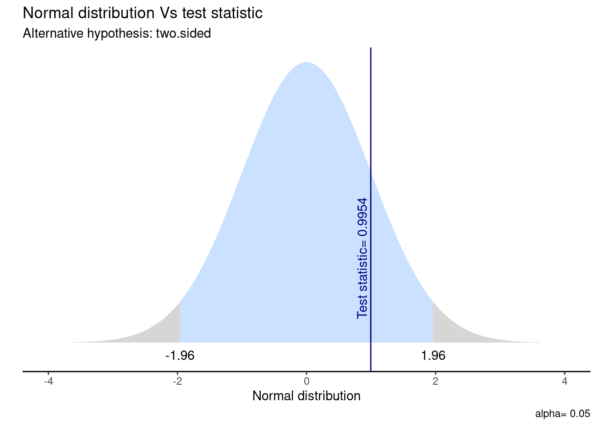
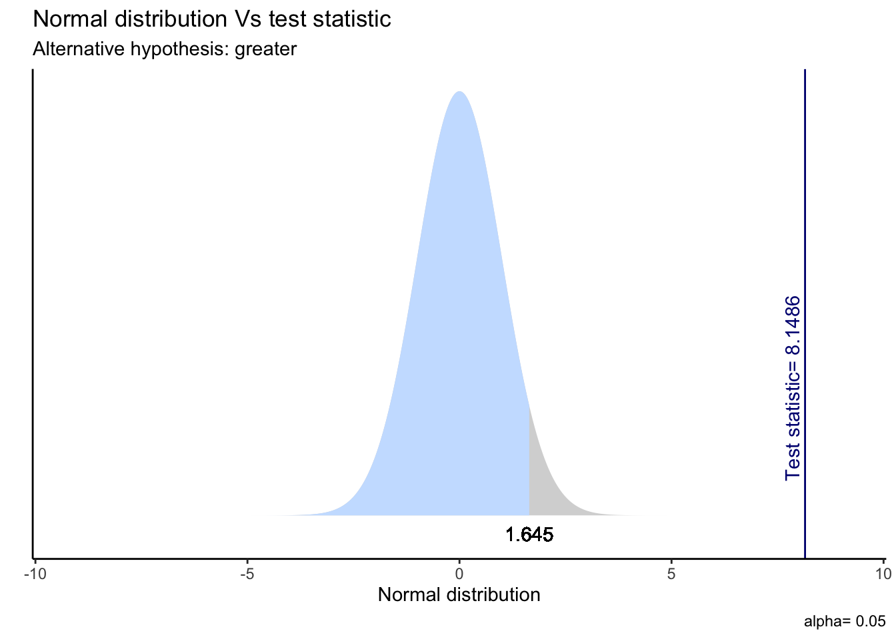

pacman::p_load(tidyverse, # Manipulacion datos
sjPlot, #tablas
confintr, # IC
gginference, # Visualizacion
rempsyc, # Reporte
broom) # Varios
options(scipen = 999) # para desactivar notacion cientifica
rm(list = ls()) # para limpiar el entorno de trabajoInferencia 4: Pruebas de hipótesis II
Sesión del viernes, 27 de octubre de 2023
Objetivo de la práctica
El objetivo de esta guía práctica es profundizar en la inferencia estadóstica, particularmente en el contraste de hipótesis de diferencias entre dos grupos.
En detalle, aprenderemos:
- Aplicar pruebas de hipótesis direccionales.
- Aplicar inferencia estadística a proporciones.
- Emplear la correlación en contexto de inferencia.
Recursos de la práctica
En esta práctica trabajaremos con un subconjunto de datos previamente procesados de la Encuesta de Caracterización Socioeconómica (CASEN) del año 2022, elaborada por el Ministerio de Desarrollo Social y Familia. Para este ejercicio, obtendremos directamente esta base desde internet. No obstante, también tienes la opción de acceder a la misma información a través del siguiente enlace: CASEN 20222. Desde allí, podrás descargar el archivo que contiene el subconjunto procesado de la base de datos CASEN 2022.
Cinco pasos para la inferencia estadística
En inferencia, las pruebas de hipótesis nos ayudan a determinar si el resultado que obtenemos en nuestra muestra es un efecto real/extensible a la población o un error de muestreo. Aquí recomendamos una lista de cinco pasos lógicos para enfrentarnos a la inferencia estadística:
| Paso | Detalle |
|---|---|
| 1 | Formula \(H_0\) y \(H_A\) y estipula la dirección de la prueba |
| 2 | Calcula el error estándar (SE) |
| 3 | Calcula el valor estimado de la prueba (ej: Z o t) |
| 4 | Especifica el valor crítico de la prueba |
| 5 | Contrasta el valor estimado con el valor crítico e intrepreta los resultados |
Además de estos 5 pasos también existe la posibilidad de calcular un intervalo de confianza, que acompañe la precisión de nuestra estimación.
Preparación datos
Comencemos por preparar nuestros datos. Iniciamos cargando las librerías necesarias.
Cargamos los datos directamente desde internet.
load(url("https://github.com/cursos-metodos-facso/datos-ejemplos/raw/main/proc_casen.RData")) #Cargar base de datosA continuación, exploramos la base de datos proc_casen.
names(proc_casen) # Nombre de columnas [1] "id_vivienda" "folio" "id_persona" "hogar"
[5] "nucleo" "varunit" "varstrat" "expr"
[9] "edad" "sexo" "educ" "activ"
[13] "y1" "ytrabajocor" "pobreza_multi_5d" "o15"
[17] "qaut" "fdt" "ocupado" "desocupado"
[21] "inact" "hijo" "n_educ" "universitaria"
[25] "tipo_ocup" "ss_salud" "ayuda_moverse" "ayuda_thogar"
[29] "disc_fisica" dim(proc_casen) # Dimensiones[1] 202111 29Contamos con 24 variables (columnas) y 202.111 observaciones (filas).
Recordemos…
En estadística, la formulación de hipótesis que implica dos variables (o la comparación de grupos) busca determinar si existen diferencias en una variable entre grupos y, de ser el caso, evaluar si esta diferencia es estadísticamente significativa.
Hasta ahora, hemos aprendido a contrastar hipótesis sobre diferencias entre grupos. A esto también se le llama hipótesis de dos colas.
Prueba de dos colas
Contrastamos la hipótesis nula (o de trabajo) de no diferencias entre grupos: \[ H_{0}: \mu_{1} - \mu_{2} = 0 \] En relación a una hipótesis alternativa sobre diferencias entre grupos: \[ H_{A}: \mu_{1} - \mu_{2} \neq 0 \]
Veamos un ejemplo con nuestros datos. Evaluemos si el promedio de ingresos del trabajo de las mujeres es distinto al de los hombres en Chile en el 2022.
Apliquemos nuestros cinco pasos para inferencia.
- Formulamos nuestras hipótesis y dirección de la prueba:
\(H_{0}\): \(\mu_{hombres}\) \(-\) \(\mu_{mujeres}\) \(=\) \(0\)
\(H_{A}\): \(\mu_{hombres}\) \(-\) \(\mu_{mujeres}\) \(\neq\) \(0\)
- Calcula el error estándar (SE) para diferencia de medias:
ocupados <- proc_casen %>%
filter(ocupado == 1) %>%
na.omit() # subset de datos solo con personas ocupadas
datos_t <- ocupados %>%
group_by(sexo) %>%
summarise(media = mean(ytrabajocor, na.rm = T),
ds = sd(ytrabajocor, na.rm = T),
n = n())
datos_t# A tibble: 2 × 4
sexo media ds n
<dbl> <dbl> <dbl> <int>
1 1 578107. 388352. 64
2 2 516235. 405302. 109Obtenemos la diferencia de medias (\(\bar{x_1}\) - \(\bar{x_2}\))
dif_medias <- 817688.2 - 674428.3
dif_medias[1] 143259.9Ahora, calculamos el error estándar.
s_h <- 837710.9
s_m <- 638044.1
n_h <- 32019
n_m <- 26313
se_dif <- sqrt((s_h^2)/n_h + (s_m^2)/n_m)
se_dif[1] 6114.607- Calcula el valor estimado de la prueba (t para diferencia de medias):
t_stat <- dif_medias/se_dif
t_stat[1] 23.42912- Especifica el valor crítico:
df <- n_h + n_m - 2 # definimos grados de libertad
t_critico <- qt(p = 0.05/2, df, lower.tail = FALSE)
t_critico[1] 1.960005- Contrasta el valor estimado con el crítico e interpreta los resultados:
t_stat > t_critico[1] TRUEComparamos el valor estimado con el valor crítico para dos colas. Por tanto, nuestro valor estimado queda dentro de la zona de rechazo de \(H_0\). En consecuencia, podemos decir que:
La prueba T que evalúa la diferencia de medias entre el ingreso del trabajo según sexo sugiere que el efecto es positivo y estadísticamente signficativo (diferencia = 143.260, t(58004.33) = 23.43, p < .001). Por tanto, rechazamos la \(H_{0}\) sobre igualdad de medias con un 95% de confianza, existiendo evidencia a favor de nuestra \(H_{A}\) ya que hay diferencias salariales significativas entre hombres y mujeres.
- Y el cálculo directo en R:
t_results <- t.test(ocupados$ytrabajocor ~ ocupados$sexo,
alternative = "two.sided")
#stats.table <- tidy(t_results, conf_int = T)
#nice_table(stats.table, broom = "t.test")Visualicemos la distribución de esta prueba y su zona de rechazo.
ggttest(t_results)Warning: `geom_vline()`: Ignoring `data` because `xintercept` was provided.
Además, podemos calcular un intervalo de confianza que acompaña nuestra estimación. En este caso, vemos que el IC para la diferencia de medias oscila entre [131.275 - 155.245] y no contiene el cero, por lo que podemos rechazar la hipótesis nula.
Pruebas de hipótesis direccionales para la media
Sin embargo, también podemos plantear hipótesis respecto a que el valor de cierto parámetro para un grupo puede ser mayor o menor al de otro grupo. A esto se le conoce como hipótesis de una cola.
Prueba de una cola
\[ H_{0}: \mu_{0} ≥ \mu_{1} ; \mu_{0} ≤ \mu_{1}\]
\[ H_{A}: \mu_{0} > \mu_{1} \]
\[ H_{A}: \mu_{0} < \mu_{1} \]
Tomando como ejemplo el trabajo de la ganadora del Premio Nobel de Economía 2023 Claudia Goldin, comprobemos si los ingresos de las mujeres trabajadoras que no tienen hijos es mayor al ingreso de las mujeres trabajadoras que sí tienen hijos. Por tanto, usaremos prueba \(t\) para diferencia de medias.
Apliquemos nuestros 5 pasos.
- Formulamos nuestras hipótesis y dirección de la prueba:
En donde 0 = sin hijos y 1 = con hijos;
\(H_{0}\): \(\mu_{0}\) \(≤\) \(\mu_{1}\)
\(H_{A}\): \(\mu_{0}\) \(>\) \(\mu_{1}\)
- Calcula el error estándar (SE) para diferencia de medias:
goldin_data <- proc_casen %>%
filter(ocupado == 1 & sexo == 2) %>%
na.omit()# creamos subset con solo mujeres ocupadas
datos_t <- goldin_data %>%
group_by(hijo) %>%
summarise(media = mean(ytrabajocor, na.rm = T),
ds = sd(ytrabajocor, na.rm = T),
n = n())
datos_t# A tibble: 2 × 4
hijo media ds n
<dbl> <dbl> <dbl> <int>
1 0 586741. 441974. 9
2 1 509889. 403640. 100En este caso, obtenemos la diferencia de medias (\(\bar{x}_0 - \bar{x}_1\) ).
dif_medias <- 729850.1 - 655087.8
dif_medias[1] 74762.3Y luego su error estándar.
s_0 <- 659400.5
s_1 <- 629290.5
n_0 <- 6807
n_1 <- 19506
se_dif <- sqrt((s_0^2)/n_0 + (s_1^2)/n_1)
se_dif[1] 9174.886- Calcula el valor estimado de la prueba (t para diferencia de medias):
t_stat <- dif_medias / se_dif
t_stat[1] 8.148581- Especifica el valor crítico:
df <- n_0 + n_1 - 2 # definimos grados de libertad
t_critico <- qt(p = 0.05, df, lower.tail = FALSE)
t_critico[1] 1.644912- Contrasta el valor estimado con el crítico e interpreta los resultados:
t_stat > t_critico[1] TRUELa prueba T que evalúa la diferencia de medias entre el ingreso del trabajo y tener hijos en las mujeres ocupadas sugiere que el efecto es positivo y estadísticamente signficativo (diferencia = 74.762, t(11417.34) = 8.15, p < .05). Por tanto, con un 95% de confianza, rechazamos la \(H_{0}\) ya que existe evidencia a favor de nuestra \(H_{A}\) respecto a que el ingreso de las mujeres sin hijos es mayor al ingreso de las mujeres con hijos.
- Y el cálculo en R.
t_results_goldin <- t.test(goldin_data$ytrabajocor ~ goldin_data$hijo,
alternative = "greater") # indicamos la direccion de la prueba
# stats.table <- tidy(t_results_goldin, conf.int = T)
# nice_table(stats.table, broom = "t.test") Visualicemos la distribución de esta prueba y su zona de rechazo.
ggttest(t_results_goldin)
En este caso, el IC del 95% es (59.670, Inf), donde “Inf” representa infinito. Esto significa que podemos estar 95% seguros de que la diferencia real entre las medias está por encima de 59.670. En otras palabras, con alta confianza, podemos afirmar que la media del “grupo 0” es significativamente mayor que la del “grupo 1”.
Inferencia para proporciones
Cuando queremos realizar inferencia para variables categóricas, generlamente utilizamos pruebas que comparan proporciones de una variable de interés entre grupos.
El test de proporciones es una prueba estadística utilizada para determinar si hay una diferencia significativa entre dos proporciones (tasas) en dos grupos. Se basa en datos categóricos, en donde se cuentan los eventos “exitosos” o “positivos” en cada grupo de comparación, por sobre el total de eventos.
Evaluamos si existen diferencias entre hombres y mujeres en la proporción de encontrarse en situación de pobreza multidimensional.
pobreza <- proc_casen[1:300,] # creamos un subsample solo como ejemplo
sjPlot::sjt.xtab(pobreza$pobreza_multi_5d, pobreza$sexo, show.col.prc = T)| situación de pobreza multidimensional con entorno y redes (5 dimensiones) |
Sexo | Total | |
|---|---|---|---|
| 1. Hombre | 2. Mujer | ||
| No pobreza | 91 67.9 % |
115 71 % |
206 69.6 % |
| Pobreza | 43 32.1 % |
47 29 % |
90 30.4 % |
| Total | 134 100 % |
162 100 % |
296 100 % |
| χ2=0.199 · df=1 · &phi=0.033 · p=0.656 | |||
Formulemos nuestras hipótesis:
\(H_0\): \(p_{hombres}\) \(=\) \(p_{mujeres}\)
\(H_A\): \(p_{hombres}\) \(\neq\) \(p_{mujeres}\)
Ahora, creemos un objeto llamado xtab que contendrá la frecuencia de casos exitosos (“pobreza”) sobre el total de casos para cada grupo.
xtab <- as.table(rbind(c(43, 47),c(91, 115)))
dimnames(xtab) <- list(
pobreza = c("si", "no"),
sexo = c("hombre", "mujer")
)Luego, aplicamos la función prop.test() para evaluar nuestra hipótesis.
prop_results <- prop.test(xtab, alternative = "two.sided")
#stats.table <- tidy(prop_results, conf.int = T)
#nice_table(stats.table, broom = "prop.test")¿Y cómo reportamos esto?:
Esta prueba que evalúa la diferencia de proporciones entre encontrarse en situación de pobreza según sexo sugiere que el efecto es positivo y estadísticamente no significativo (\(X^2\)= 0.19887, p = 0.6556). Por tanto, no se rechaza la \(H_{0}\) sobre igualdad de proporciones ya que no existe suficiente evidencia para concluir que las proporciones en los dos grupos son significativamente diferentes.
Además de lo anterior, vemos que en este caso el IC de diferencia de proporciones sí contiene el cero, por lo que no podemos rechazar la hipótesis nula.
Inferencia en correlación
En el contexto de la inferencia, la correlación nos permite determinar si existe (o no) una asociación estadísticamente significativa entre dos variables. En ese sentido, la lógica del contraste de hipótesis usando correlación es:
Hipótesis en correlación
Contrastamos la hipótesis nula (o de trabajo) de no asociación entre variables: \[ H_{0}: \rho = 0 \]
En relación a una hipótesis alternativa sobre la existencia una asociación significativa entre variables:
\[ H_{A}: \rho \neq 0 \]
Tomemos por ejemplo la siguiente pregunta de investigación: ¿en qué medida el nivel educacional alcanzado por las personas se relaciona con sus ingresos en Chile en el 2022?
Formulemos nuestra hipótesis:
\(H_{0}\): \(cor(educ,ingreso)\) \(=\) \(0\)
\(H_{A}\): \(cor(educ,ingreso)\) \(\neq\) \(0\)
Obtengamos el coeficiente de correlación \(r\) de Pearson entre el nivel educacional alcanzado y los ingresos de las personas en Chile en 2022. Para esto usaremos solamente observaciones completas (listwise).
cor_results <- cor.test(proc_casen$educ, proc_casen$ytrabajocor,
method = "pearson",
use = "complete.obs")
#stats.table <- tidy(cor_results)
#nice_table(stats.table, broom = "cor")Ya sabemos cómo interpretar una correlación, ahora usemos este resultado para probar nuestra hipótesis:
El coeficiente de correlación de Pearson entre nivel educativo e ingresos es positivo, estadísticamente significativo (r = 0.38, p < .001) y moderado de acuerdo con las recomendaciones de Cohen (1988). Por tanto, con un 95% de confianza se puede rechazar la \(H_{0}\) de no asociación entre variables, existiendo evidencia a favor de la \(H_{A}\) sobre una asociación significativa entre educación e ingresos.
Resumen
Hoy profundizamos en la inferencia estadóstica, particularmente en el contraste de hipótesis de diferencias entre dos grupos.
En detalle, aprendimos a:
- Aplicar pruebas de hipótesis direccionales.
- Aplicar inferencia estadística a proporciones.
- Emplear la correlación en contexto de inferencia.
Reporte de progreso
Completar el reporte de progreso correspondiente a esta práctica aquí. El plazo para contestarlo es hasta el día viernes de la semana en la que se publica la práctica correspondiente.